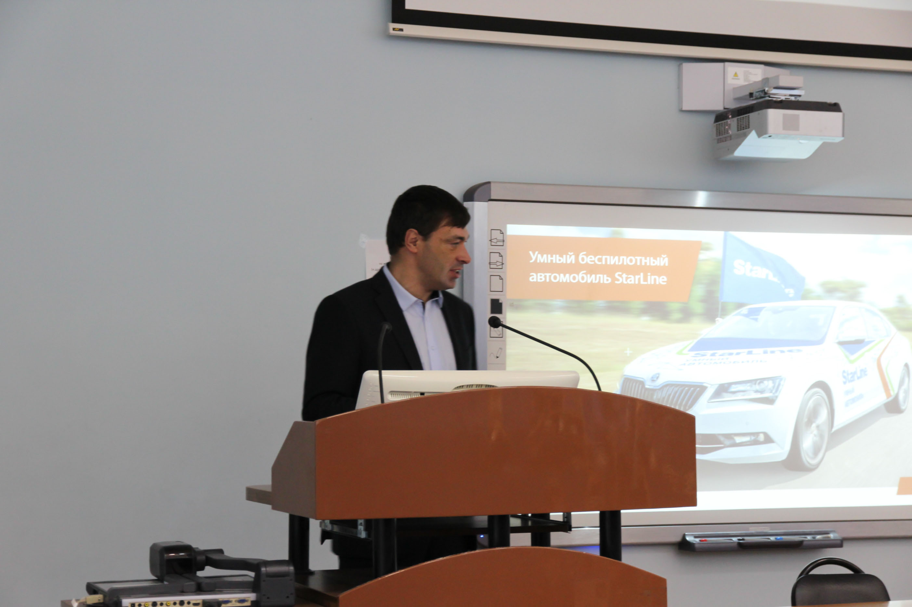
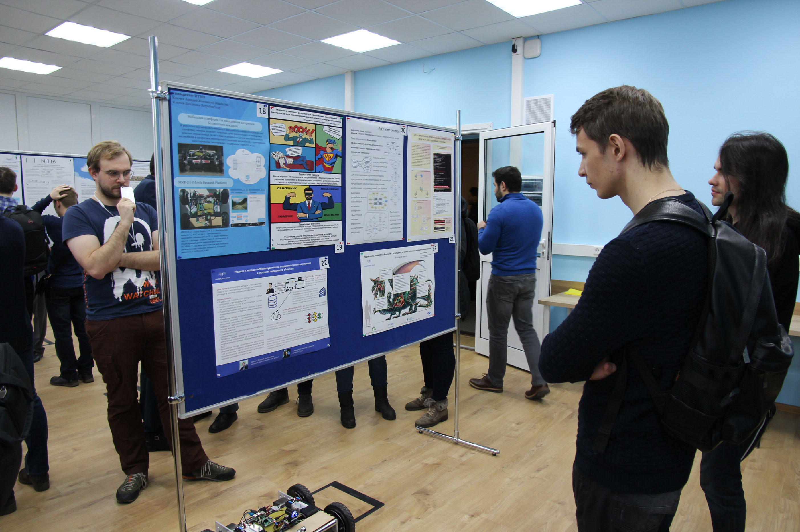
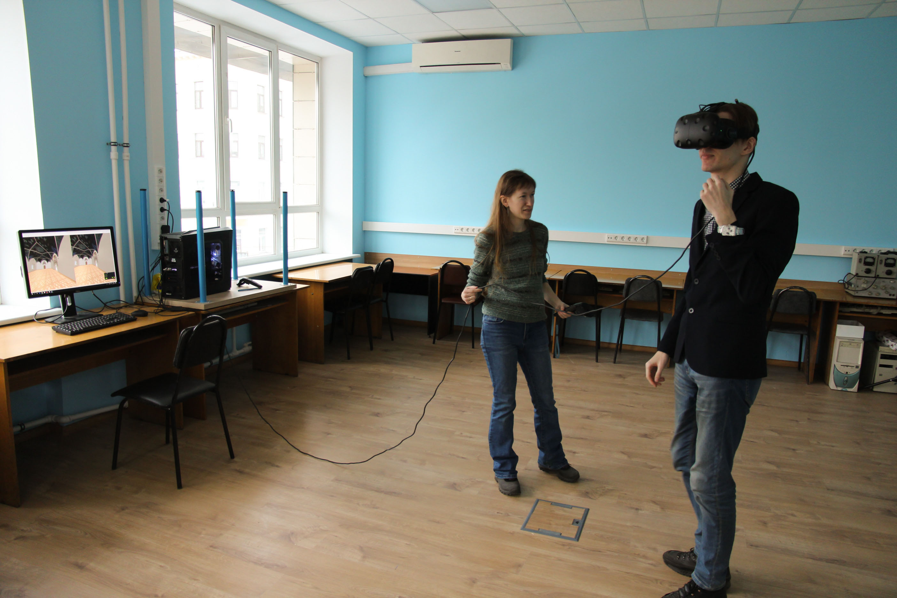
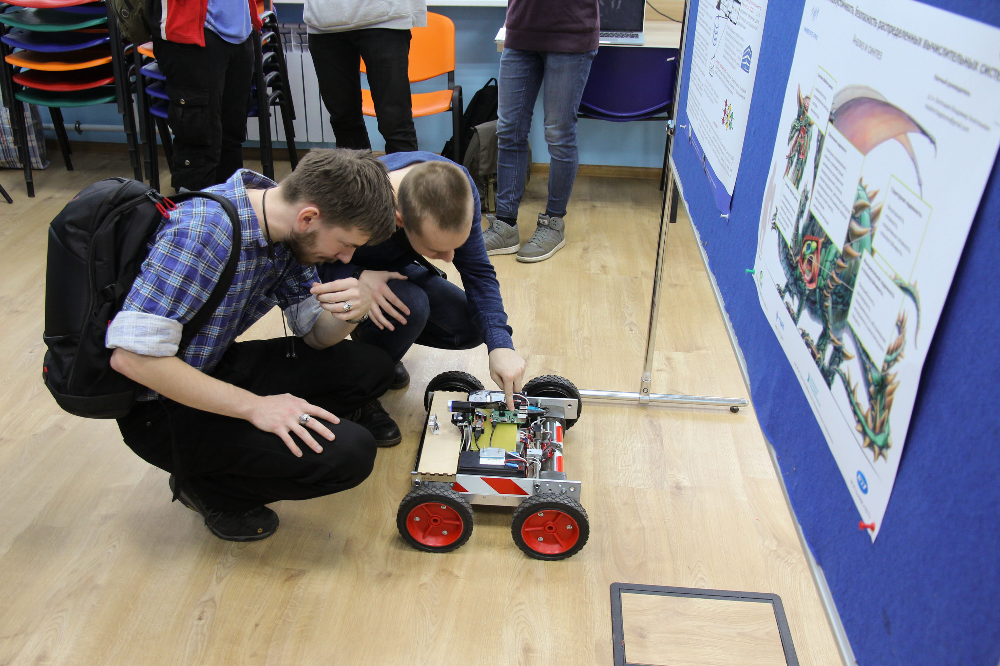
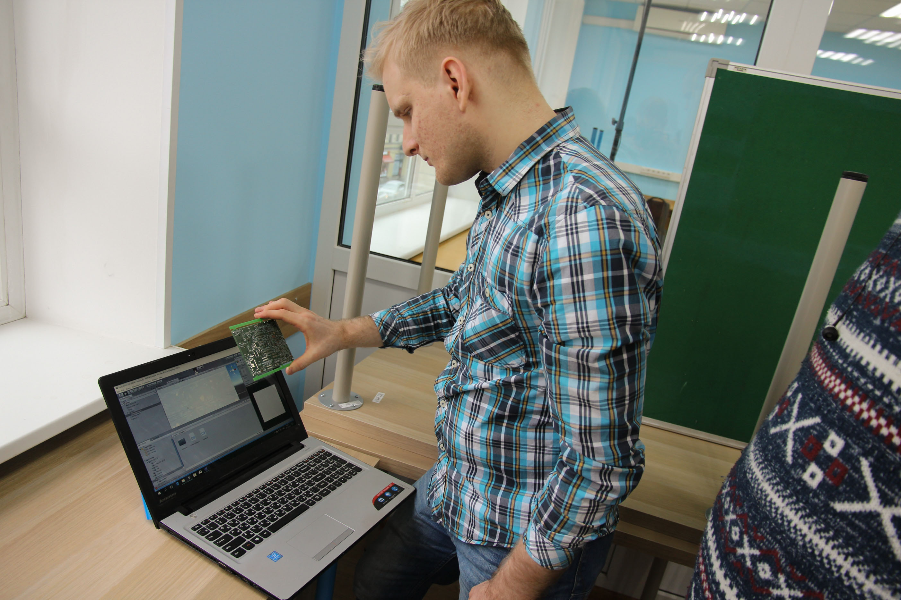
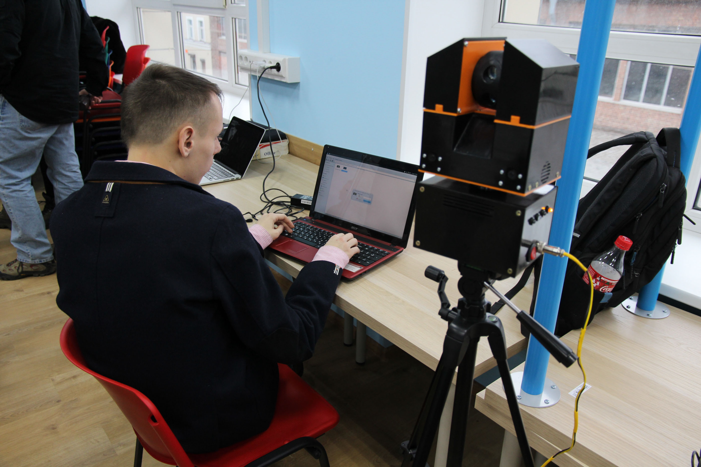
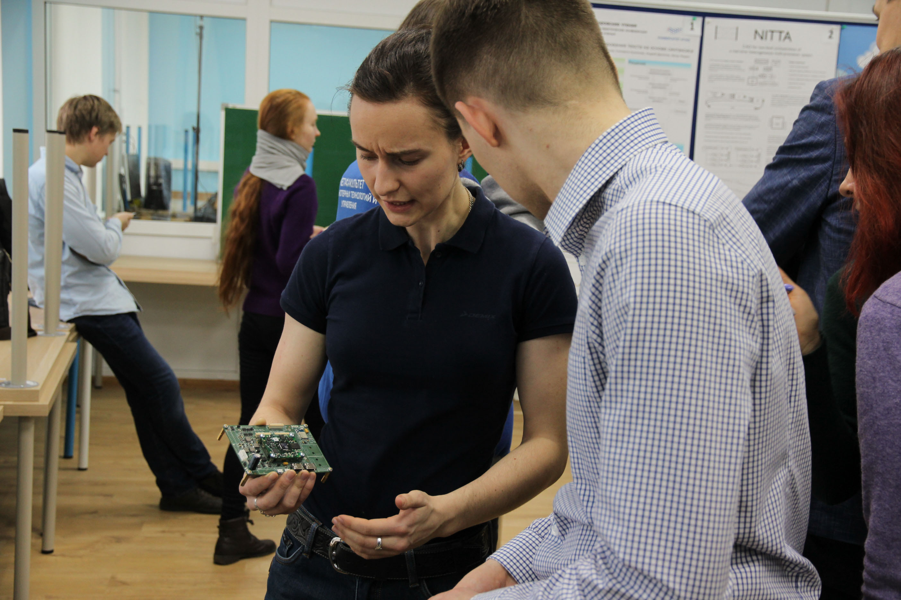
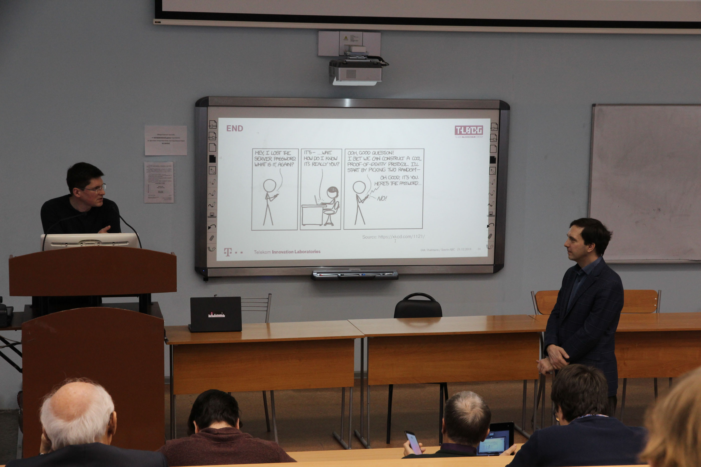

MICSECS-2018
Proceedings in CEUR (indexed by Scopus): jump to proceedings
Printed Russian version: download
Conference statistics
- Submissions: 112
- Accepted submissions: 82
- Acceptance rate: 0.73
- Participants: 273
Keynote talk: «Self-Driving Cars: Difficulties vs Opportunities?» by Boris Ivanov, StarLine

Poster & Demo Session






Keynote talk: «Self Sovereign Identity: on DIDs and more», by Dirk Thatmann, T-Labs
